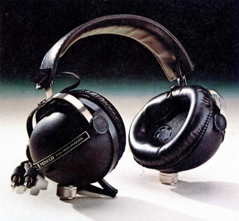

SE-Q404

■価格 8,000円■型式 2/4ch密閉ダイナミック型■振動板 45�oコーン型（ポリエステル系）×4■インピーダンス ■再生周波数帯域 20-20,000Hz■許容入力 500mW■感度 ■コード 3ｍ平行ビニールコード■重量 550g（コード含まず）■発売 1974年■販売終了 1977年頃■備考 ボリュームコントロール、2/4ch切替スイッチ装備
パイオニアのインデックスへ